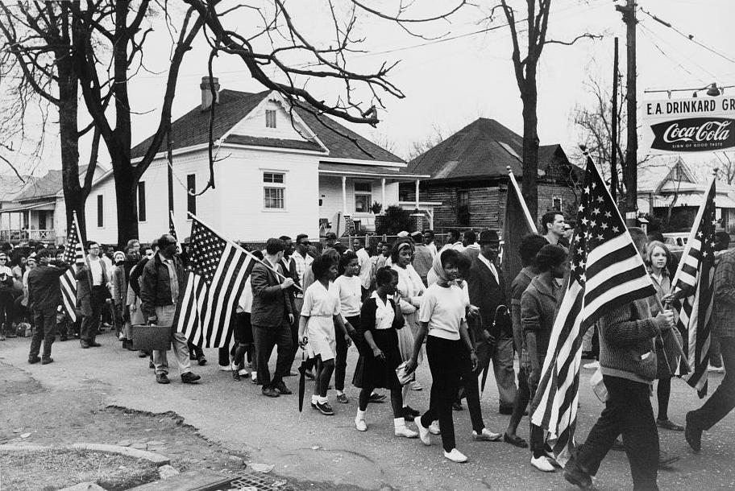

Directions: Study the photograph and the background, then answer the questions.

Background. This photograph shows the march from Selma to Montgomery as it was completed in March 1965, under federal protection, after the attack of March 7 on the Edmund Pettus Bridge. The marchers were walking to the state capital to press the demand the Selma campaign had made all winter, that Black citizens of Dallas County be allowed to register and vote. In Dallas County, Black residents were about half the population and almost none were registered. Five months after this photograph was taken, the president signed a new federal voting law.
1. Describe what the photograph shows, and explain what the marchers were demanding. Name the two cities the march connected, the bridge where the first attempt was attacked, and the date of that attack.
2. The law signed five months after this photograph was the second of two great acts. Name the first act, give the date it was signed, and state how it got through the Senate, naming the tactic used against it and the vote that ended the fight.
3. State what the 1964 act did in public accommodations and in employment, using the act's own titles, and name two things the act did not reach.
4. Define the Voting Rights Act of 1965 as the guided notes state it, and give the arithmetic that followed in Mississippi within three years.
1. Describe the photograph and what the marchers demanded. The photograph shows participants in the Selma to Montgomery march, some carrying American flags, walking the highway to the state capital in March 1965. The demand was the vote: registration and voting rights for Black citizens kept off the rolls by local registrars. The march connected Selma and Montgomery. The first attempt was attacked on the Edmund Pettus Bridge on March 7, 1965, Bloody Sunday. Credit requires both cities, the bridge, and the date. (Blueprint 12)
2. Name the first act, its signing date, and how it got through the Senate. The Civil Rights Act of 1964, signed on July 2, 1964. Southern senators held it with a filibuster that ran for sixty working days, and the Senate ended the fight by voting for cloture on June 10, 1964, by 71 to 29, the first time in the century it had closed debate on a civil rights bill, with Republican votes supplying the margin. (Blueprint 11)
3. State what the 1964 act did in public accommodations and employment, and name two things it did not reach. Title II barred discrimination in places of public accommodation such as hotels, restaurants, and theaters. Title VII banned discrimination in employment on the basis of race, color, religion, sex, or national origin. The definition of Title VII must match the guided notes. Not reached, any two: genuinely private clubs; housing; effective registration, since the voting provisions left the government to sue county by county; orders against employers, since the first employment commission could investigate and settle but not command. (Blueprint 11)
4. Define the Voting Rights Act of 1965 and give the Mississippi arithmetic. The definition must match the guided notes: the federal law that suspended literacy tests, sent federal examiners to register voters in covered states, and required those states to clear any change in voting rules with the federal government first. Mississippi moved from under seven percent Black registration in 1964 to about sixty percent within three years. Full credit also accepts the national figure, about a quarter of a million new Black voters registered by the end of 1965. (Blueprint 12)
Teacher note. This check is formative. Question 1 is the observation diagnostic: students who cannot say what the march demanded have not yet connected the Selma record to the statute it produced. Questions 2 and 3 predict success on the blueprint 11 half of the unit test, and question 4 on the blueprint 12 half, because each requires the dates, the vote, and the definitions in the student's own words.